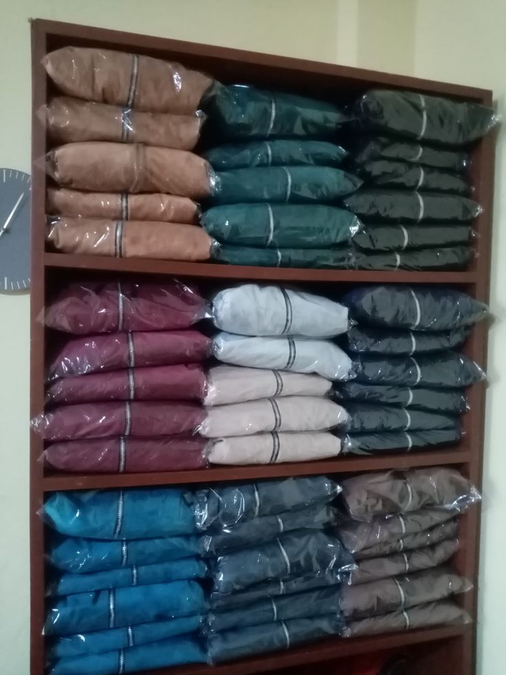
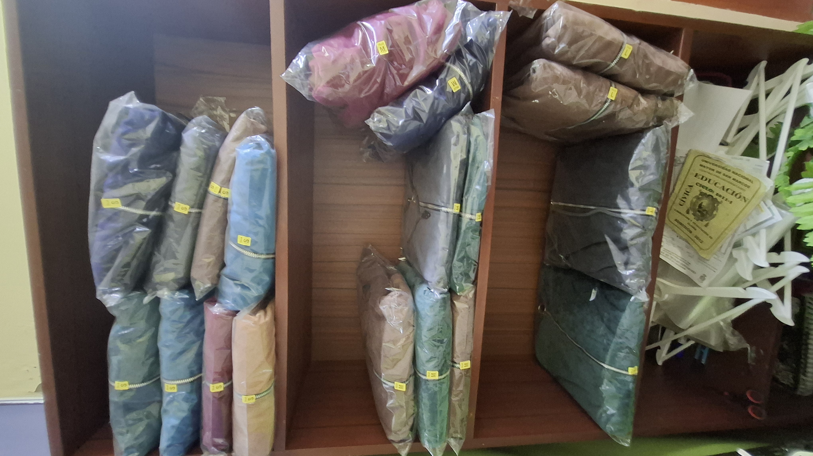
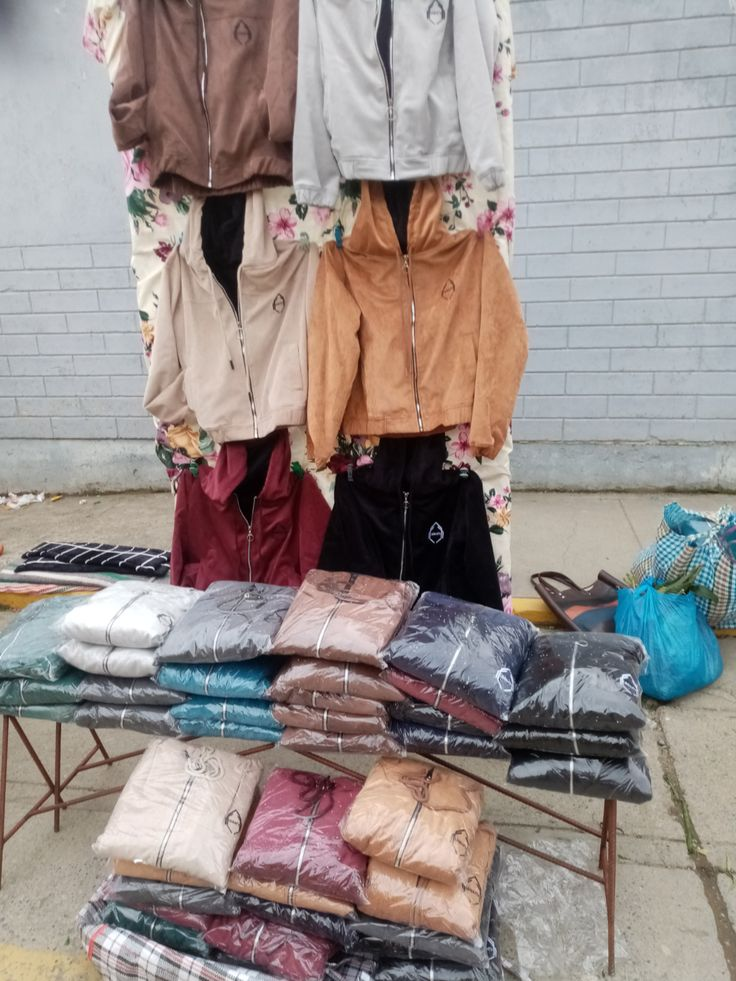
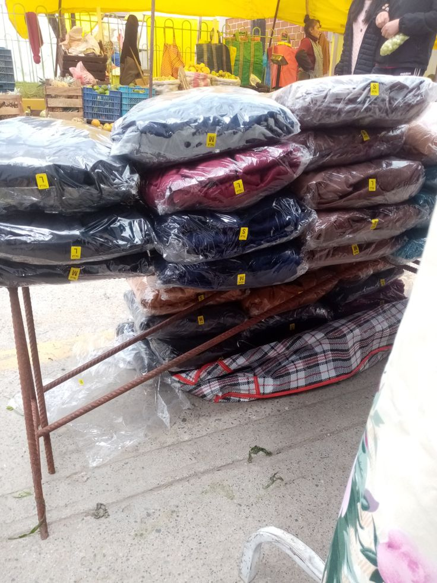

Casacas de terciopelo · Venta en ferias (mayor y menor)
Fecha del reporte: 30/09/2026 · Titular: ______________________ DNI: __________
| Concepto | Unidades |
|---|---|
| Casacas fabricadas (estante lleno) | 47 |
| Casacas en stock actual (estante casi vacío) | 20 |
| Casacas vendidas (47 − 20) | 27 |
| Tipo de venta | Unidades | Precio unit. (S/) | Total (S/) |
|---|---|---|---|
| Por mayor (2 ventas de 3 a más unidades) | 6 | 50 | 300 |
| Por menor (ferias) | 21 | 80 | 1,680 |
| TOTAL | 27 | S/ 1,980 |
Nota: las cantidades son una reconstrucción estimada por diferencia de inventario, al no llevarse un cuaderno de ventas diario. Se implementa desde ahora un registro diario.



